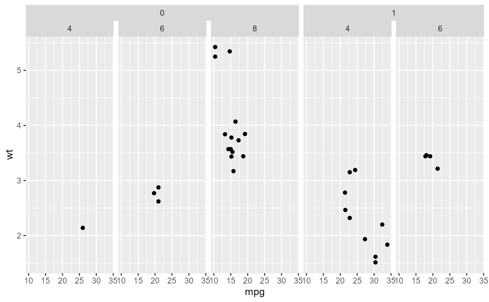
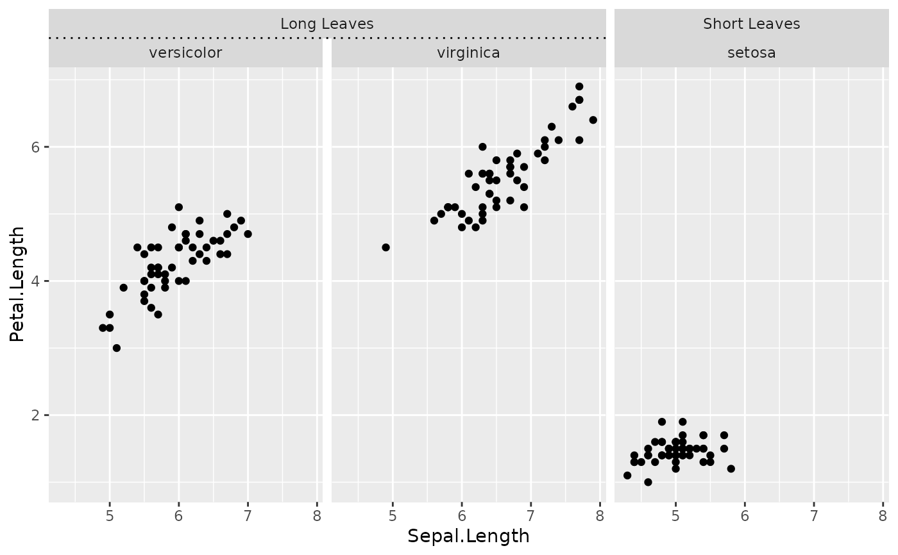

facet_nested() forms a matrix of panels defined by row
and column faceting variables and nests grouped facets.
facet_nested(
rows = NULL,
cols = NULL,
scales = "fixed",
space = "fixed",
axes = "margins",
remove_labels = "none",
independent = "none",
shrink = TRUE,
labeller = "label_value",
as.table = TRUE,
switch = NULL,
drop = TRUE,
margins = FALSE,
nest_line = FALSE,
resect = unit(0, "mm"),
strip = strip_nested(),
bleed = NULL
)
Arguments
| rows |
A set of variables or expressions quoted by
vars() and defining faceting groups on the rows or columns
dimension. The variables can be named (the names are passed to
labeller).
For compatibility with the classic interface, rows can also be
a formula with the rows (of the tabular display) on the LHS and
the columns (of the tabular display) on the RHS; the dot in the
formula is used to indicate there should be no faceting on this
dimension (either row or column). |
| cols |
A set of variables or expressions quoted by
vars() and defining faceting groups on the rows or columns
dimension. The variables can be named (the names are passed to
labeller).
For compatibility with the classic interface, rows can also be
a formula with the rows (of the tabular display) on the LHS and
the columns (of the tabular display) on the RHS; the dot in the
formula is used to indicate there should be no faceting on this
dimension (either row or column). |
| scales |
A character(1) or logical(1) whether scales are shared
across facets or allowed to vary. Interacts with the independent
argument. One of the following:
"fixed" or FALSEScales are shared across all facets
(default). "free_x"x-scales are allowed to vary across rows. "free_y"y-scales are allowed to vary across columns. "free" or TRUEScales can vary across rows and columns. |
| space |
A character(1) or logical(1) determining whether the size of
panels are proportional to the length of the scales. When the independent
argument allows for free scales in a dimension, the panel sizes cannot be
proportional. Note that the scales argument must be free in the same
dimension as the space argument to have an effect.One of the following:
"fixed" or FALSEAll panels have the same size (default). "free_x"Panel widths are proportional to the x-scales. "free_y"Panel heights are proportional to the y-scales. "free" or TRUEBoth the widths and heights vary according to
scales. |
| axes |
A character(1) or logical(1) where axes should be drawn. One
of the following:
"margins" or FALSEOnly draw axes at the outer margins
(default). "x"Draw axes at the outer margins and all inner x-axes too. "y"Draw axes at the outer margins and all inner y-axes too. "all" or TRUEDraw the axes for every panel. |
| remove_labels |
A character(1) or logical(1) determining whether
axis text is displayed at inner panels. One of the following:
"none" or FALSEDisplay axis text at all axes (default). "x"Display axis text at outer margins and all inner y-axes. "y"Display axis text at outer margins and all inner x-axes. "all" or TRUEOnly display axis text at the outer margins. |
| independent |
A character(1) or logical(1) determining whether
scales can vary within a row or column of panels, like they can be in
ggplot2::facet_wrap. The scales argument must be free for the same
dimension before they can be set to independent. One of the following:
"none" or FALSEAll y-scales should be fixed in a row and all
x-scales are fixed in a column (default). "x"x-scales are allowed to vary within a column. "y"y-scales are allowed to vary within a row. "all" or TRUEBoth x- and y-scales are allowed to vary within
a column or row respectively. |
| shrink |
If TRUE, will shrink scales to fit output of
statistics, not raw data. If FALSE, will be range of raw data
before statistical summary. |
| labeller |
A function that takes one data frame of labels and
returns a list or data frame of character vectors. Each input
column corresponds to one factor. Thus there will be more than
one with vars(cyl, am). Each output
column gets displayed as one separate line in the strip
label. This function should inherit from the "labeller" S3 class
for compatibility with labeller(). You can use different labeling
functions for different kind of labels, for example use label_parsed() for
formatting facet labels. label_value() is used by default,
check it for more details and pointers to other options. |
| as.table |
If TRUE, the default, the facets are laid out like
a table with highest values at the bottom-right. If FALSE, the
facets are laid out like a plot with the highest value at the top-right. |
| switch |
By default, the labels are displayed on the top and
right of the plot. If "x", the top labels will be
displayed to the bottom. If "y", the right-hand side
labels will be displayed to the left. Can also be set to
"both". |
| drop |
If TRUE, the default, all factor levels not used in the
data will automatically be dropped. If FALSE, all factor levels
will be shown, regardless of whether or not they appear in the data. |
| margins |
Either a logical value or a character
vector. Margins are additional facets which contain all the data
for each of the possible values of the faceting variables. If
FALSE, no additional facets are included (the
default). If TRUE, margins are included for all faceting
variables. If specified as a character vector, it is the names of
variables for which margins are to be created. |
| nest_line |
a logical vector of length 1, indicating whether to
draw a nesting line to indicate the nesting of variables. Control the look
of the nesting line by setting the ggh4x.facet.nestline theme
element. |
| resect |
a unit vector of length 1, indicating how much the
nesting line should be shortened. |
| strip |
An object created by a call to a strip function, such as
strip_nested(). |
| bleed |
Deprecated. Use `strip = strip_nested(bleed = ...)` instead.
See details. |
Value
A FacetNested ggproto object.
Details
This function inherits the capabilities of
facet_grid2().
Unlike facet_grid(), this function only automatically expands
missing variables when they have no variables in that direction, to allow
for unnested variables. It still requires at least one layer to have all
faceting variables.
Hierarchies are inferred from the order of variables supplied to
rows or cols. The first variable is interpreted to be the
outermost variable, while the last variable is interpreted to be the
innermost variable. They display order is always such that the outermost
variable is placed the furthest away from the panels. Strips are
automatically grouped when they span a nested variable.
The bleed argument controls whether lower-level strips are allowed
to be merged when higher-level strips are different, i.e. they can bleed
over hierarchies. Suppose the facet_grid() behaviour would be the
following for strips:
[_1_][_2_][_2_]
[_3_][_3_][_4_]
In such case, the default bleed = FALSE argument would result in the
following:
[_1_][___2____]
[_3_][_3_][_4_]
Whereas bleed = TRUE would allow the following:
[_1_][___2____]
[___3____][_4_]
See also
Examples

# Controlling the nest line
ggplot(df, aes(Sepal.Length, Petal.Length)) +
geom_point() +
facet_nested(~ nester + Species, nest_line = TRUE) +
theme(ggh4x.facet.nestline = element_line(linetype = 3))
